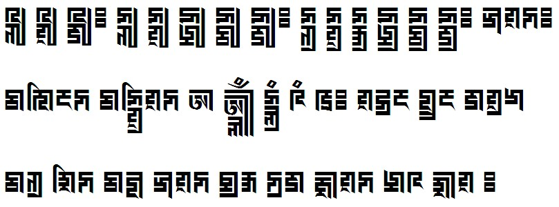

This is a test page for the Unicode Marchen script, rendered using the BabelStone Marchen font at 36 points. Marchen is a complex script, and at present is not widely supported. The text below should render correctly in the Firefox v. 52 or later.
𑲊𑲒𑲩 𑲊𑲔𑲩 𑲊𑲡𑲩𑱱 𑲍𑲒𑲩 𑲍𑲔𑲩 𑲍𑲞𑲩 𑲍𑲠𑲩 𑲍𑲡𑲩𑱱 𑲍𑲒𑲪 𑲍𑲔𑲪 𑲍𑲝𑲪 𑲍𑲞𑲪 𑲍𑲠𑲪 𑲍𑲡𑲪𑱱 𑲋𑲳𑱴𑲍𑱱
𑲀𑱶𑲱𑱵𑲍 𑲀𑲍𑲔𑲪𑲱𑱴𑲍 𑲏 𑲏𑲰𑲴𑲶 𑲎𑲰𑲲𑲵 𑲊𑲵 𑲄𑱱 𑱴𑲉𑲲𑱵 𑱼𑲪𑲲𑱵 𑲁𑱴𑲲𑲋
𑲀𑱲𑲪 𑲌𑲱𑲍 𑲀𑱼𑲳 𑲋𑲳𑱴𑲍 𑱿𑲲𑱽 𑲍𑲲𑲁 𑲃𑲴𑱴𑲍 𑱾𑲊 𑲌𑲴𑱴 𑱱
The image below shows what the above text looks like when rendered correctly.

See the 6th image here for the original woodblock source.